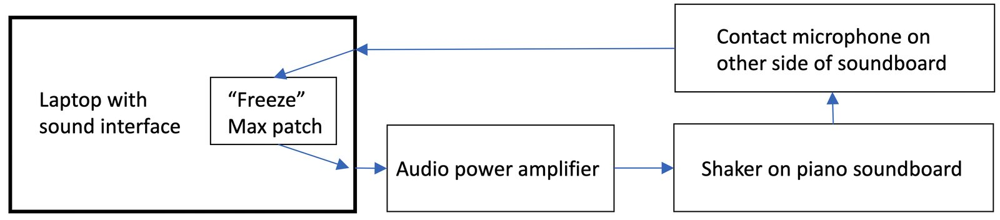
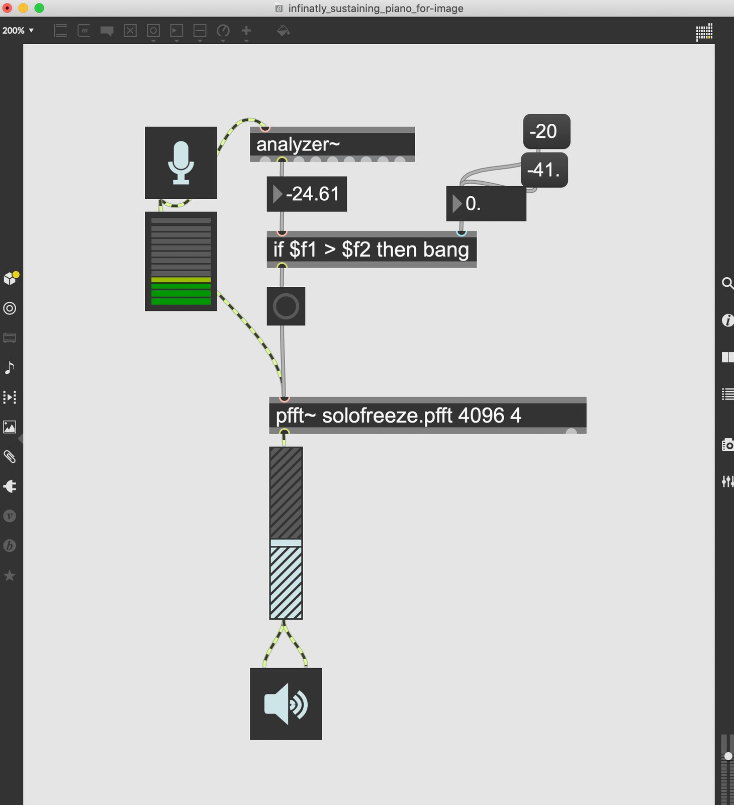
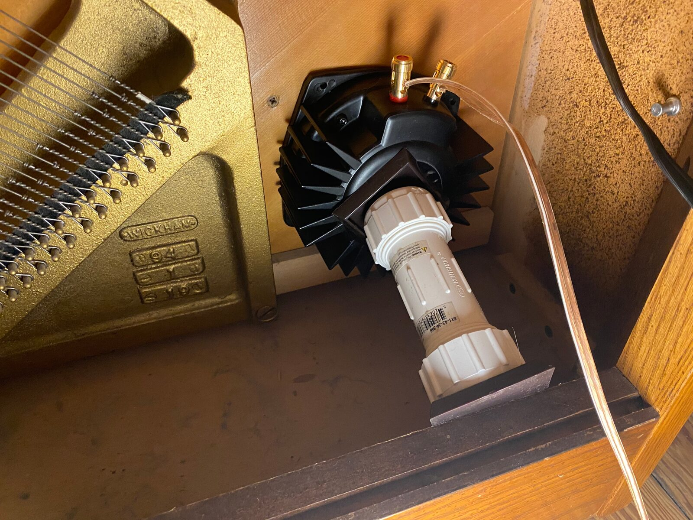

An Infinitely Sustaining Piano Achieved Through a Soundboard-Mounted Shaker
Abstract
This paper outlines a demonstration of an acoustic piano augmentation that allows for infinite sustain of one or many notes. The result is a natural sounding piano sustain that lasts for an unnatural period of time. Using a tactile shaker, a contact microphone and an amplitude activated FFT-freeze Max patch, this system is easily assembled and creates an infinitely sustaining piano.
Author Keywords
Prepared piano, shaker, transducer, infinite sustain
CCS Concepts
•Applied computing → Sound and music computing; Performing arts; •Hardware → Communication hardware, interfaces and storage → Sensors and actuators
Introduction
For over two hundred years, the acoustic piano has remained the most popular stringed keyboard instrument. Its genesis was the desire to give performers the ability to control dynamics though velocity of touch [1]. The authors of this paper were intrigued by the idea of giving performers control of the length and amount of sustain of a piano through digital augmentation. The use of a soundboard-mounted shaker creates a convincing sustain that uses the piano’s own soundboard as an amplifier.
Related Work In Acoustics
As early as the 1980’s, researchers have sometimes mounted a shaker on a piano soundboard for studying the acoustics of the piano. For example, Klaus Wogram completed a study of the soundboard and the strings. He measured the input impedance at a series of points on the soundboard and the bridge [2]. In another study, Hideo Suzuki similarly used a shaker to measure the frequency response of the soundboard and the radiation of the sound [3]. Later, Conklin Jr. studied the piano in great depth and published what he learned in a series of three journal papers. As part of his studies of the soundboard, he applied a shaker to the soundboard and put sand on it in order to find the nodal lines [4].
Related Work In Experimental Music
Starting about one hundred years ago, composers of experimental music started to think about mechanically modifying a piano in order to change the sound. For example, notes have been altered by inserting “bolts, screws, mutes, rubber erasers,” paper or other objects to alter the vibration of the strings. This was called prepared piano, and it is reported that over 200 composers have written for prepared piano [5].
In some cases, pianos have been augmented with microphone and loudspeaker systems in order to achieve sympathetic vibration of the strings with feedback. For example, such setups were utilized in the 1960s in collaborations between John Cage and David Tudor, which enabled the creation of the works Electronic Music For Piano [6] and Variations II [7]. More recently, Christopher Wallace has realized feedback pianos in his own works,1 and this idea has been explored by musicians on youtube2 as well.
Commercial Use of a Soundboard-Mounted Shaker
Yamaha’s TransAcoustic is an acoustic piano with strings. However, it’s also a digital piano that can trigger 20 playable digital voices. In this, the TransAcoustic piano is similar to other commercially available hybrid acoustic/digital pianos. However, it is unique in that it uses two soundboard mounted shaker to excite the piano’s soundboard instead of normal loudspeakers used in other hybrid pianos. The commercial appeal of the TransAcoustic as advertised by Yamaha is its ability to emulate other instruments while using the piano’s soundboard as a speaker. When performing in this digital piano mode, hammers to not strike stings. Another commercially appealing aspect of this piano while functioning in digital piano mode is it adjustable volume [8]. The mechanics of the TransAcoustic piano design are similar in the present design, except for this paper’s emphasis on infinite sustain and related effects.
Electromagnetically Prepared Pianos
Besides shakers, some designers have used electromagnetic systems to actuate piano strings, resulting in electromagnetically prepared pianos. One of the earliest such pianos appears to be the elektrophonisches Klavier, which used electromagnetic vibrations to lengthen the tones of a piano and even to some extent imitate other instruments [9][10]. However, at this time the electronics were very primitive—tuning forks were used to generate the signals sent to the electromagnets. Related instruments from the same era include the Choralcelo (1909) and the Crea-Tone (1930) [9].
Over a decade ago, computers and digital technology were integrated into designs similar to these. For example, the Electromagnetically Prepared Piano had twelve electromagnets and twelve channels of audio amplifiers. A wide variety of computer-controlled excitation sounds could be injected into the piano, realizing electronic yet acoustic-sounding tones [11][12].
More recent inventions based on this architecture include the Magnetic Resonator Piano [13], the Electromagnetically Sustained Rhodes Piano [14], and an Electromagnetically Actuated Vibraphone [15].
The Instrument


Figure 1. Block diagram of signal flow for infinite sustain.
This acoustic piano augmentation has been designed to create an infinitely sustaining piano. This was achieved through a simple software design and minimal hardware implementations.


Figure 2. The Max patch for infinite sustain
The software programing was achieved through a Max patch that receives audio input from a Schertler Basik Universal Contact Microphone attached to the soundboard on the back of the piano. If the signal from this contact microphone passes a certain threshold of amplitude in Max as detected by the analyzer~ object, an FFT freeze object is employed, causing the audio from that one moment to sustain until another signal surpasses the amplitude threshold. This FFT freeze object is able to freeze sound in real time by resynthesizing among several spectral frames at once [16]. The FFT freeze method is ideal for our design because it feeds the sound signal back while eliminating the possibility of uncontrolled acoustic howling [17]. Because the analyzer~ object in Max triggers the FFT freeze object based on an amplitude threshold, it is important that the amplitude produced by the shaker as captured by the contact microphone is less than the amplitude of the acoustic piano. Once the FFT freeze object is enacted the output from the Max patch is sent from the computer’s sound interface to 50 Watts Facmogu F900 Power Amplifier where it is then sent to the tactile shaker attached to the front of the piano’s soundboard.


Figure 3. The shaker is attached to the soundboard though the use of a tension rod.
The shaker used in this case is a 50 Watts Dayton Audio BST-1 High Power Pro Tactile Shaker. The shaker is attached to the sound board by way of a make-shift PVC tension rod. The greatest sympathetic resonance is created when the shaker is closer to the center of the sound board. However, since this implementation makes use of an upright piano the shaker placement is determined by the practicality of attaching the shaker to the piano’s soundboard in a position that allows for the use of a tension rod. In this demo the shaker is attached to the bottom right hand side of the soundboard. It is important to observe that the shaker is not simply attached to the soundboard, rather, it is wedged between the soundboard and a mechanical ground realized through the connection to the piano frame. In any one sonic event the natural sounds of the acoustic piano are heard initially as it would under normal circumstances. Immediately thereafter, the spectral frames of the sonic event are output as sustain to the shaker. The shaker re-sounds the piano’s own voice by resonating the piano’s own soundboard. The result is a natural sounding piano sustain that lasts for an unnatural period of time. From time to time the FFT freeze object will produce audio artifacts that are common to artifacts often found in phase vocoders. These sonic artifacts are less realistic piano sounds. However, as is the case with phase vocoders they are often interesting for experimental electroacoustic performance.
In performance, the shaker-induced sounds can achieve various levels of sustain as a result of traditional piano performance techniques associated with sustain. The most notable of these methods is through the use of the sustain pedal which lifts all of the dampers off the strings and allows all of the strings to vibrate sympathetically with the shaker induced sounds. Similarly, playing a note and holding the key after the hammer strikes allows only the held notes to sympathetically vibrate. Finally, the shaker-induced sounds are strong enough to resonate through the soundboard of the piano even when all dampers are muting each string.
Conclusions
When compared to piano modifications such as the Magnetic Resonator Piano or Electromagnetically Prepared Piano, this infinitely sustaining piano achieved through a soundboard-mounted shaker offers less control of individual strings. However, this instrument augmentation is more straightforward to use and can be swiftly installed. This mobility is a feature that allows performers to realistically create music with it in live music venues by quickly installing the components on various pianos.
Moreover, our system differs from prior systems in that we are actuating the soundboard directly, the upright piano does not have to be taken apart, and the piano can be played in the conventional way, with the additional functionality that can be used for infinitely sustaining notes.
Our system is intended to make the piano do something unnatural in a natural sounding way. This particular demonstration made use of an upright piano. It would be interesting to attempt this instrument augmentation on a grand piano with a longer string length allowing for more sympathetic resonance.
The simple design featured in this demonstration is ripe with the potential of additional software effects and designs that go beyond the idea of infinite sustain.
Demo Video
Demonstration video
Footnotes
Citations
Hoover, Cynthia Adams, and Edwin M. Good. "Piano." Grove Music Online. 31 Jan. 2014; Accessed 5 Apr. 2021. https://www-oxfordmusiconline-com.libezp.lib.lsu.edu/grovemusic/view/10.1093/gmo/9781561592630.001.0001/omo-9781561592630-e-1002257895.
↩- ↩Askenfelt, A. (1990). Five Lectures on the Acoustics of the Piano. Royal Swedish Academy of Music Stockholm, Sweden.
- ↩Suzuki, H. (1986). Vibration and sound radiation of a piano soundboard. The Journal of the Acoustical Society of America, 80(6), 1573–1582.
- ↩Conklin Jr, H. A. (1996). Design and tone in the mechanoacoustic piano. Part II. Piano structure. The Journal of the Acoustical Society of America, 100(2), 695–708.
- ↩Ripin, E. M., Davies, H., & Kernan, T. J. (2013). Prepared piano. Oxford University Press. https://doi.org/10.1093/gmo/9781561592630.article.A2252176
- ↩Burns, C. (2004). Designing for emergent behavior: A John Cage realization. In Proceedings of the International Computer Music Conference. Miami, FL, USA.
- ↩Pritchett, J. (2004). David Tudor as Composer/Performer in Cage’s Variations II. Leonardo Music Journal, 11–16.
- ↩Uehara, H., Tanaka, K., & Suyama, A. (2017). Acoustic system, output device, and acoustic system control method. Google Patents.
- ↩Simons, C. W., Buchner, A., & Davies, H. (2001). Sostenente piano. Oxford University Press. https://doi.org/10.1093/gmo/9781561592630.article.48429
- ↩Buss, G. (1892). Design and tone in the mechanoacoustic piano. Part II. Piano structure. Die Gartenlaube, 3, 92–93. Retrieved from https://de.wikisource.org/wiki/Musik_und_Elektricitaet
- ↩Berdahl, E., Backer, S., & Smith III, J. O. (2005). If I Had a Hammer: Design and theory of an electromagnetically-prepared piano. In Proceedings of the International Computer Music Conference.
- ↩Bloland, P. (2007). The Electromagnetically-prepared Piano and its Compositional Implications. In Proceedings of the International Computer Music Conference.
- ↩McPherson, A. (2010). The Magnetic Resonator Piano: Electronic augmentation of an acoustic grand piano. Journal of New Music Research, 39(3), 189–202.
- ↩Shear, G., & Wright, M. (2012). Further Developments in the Electromagnetically Sustained Rhodes Piano. In Proceedings of the International Conference on New Interfaces for Musical Expression (NIME).
- ↩Britt, N. C., Snyder, J., & McPherson, A. P. (2012). The EMvibe: An Electromagnetically Actuated Vibraphone. In Proceedings of the International Conference on New Interfaces for Musical Expression.
- ↩Charles, J.-F. (2008). A tutorial on spectral sound processing using Max/MSP and Jitter. Computer Music Journal, 32(3), 87–102.
- ↩Hoy, R., & Van Nort, D. (n.d.). An Ecosystemic Approach to Augmenting Sonic Meditation Practices. In 14th International Symposium on Computer Music Multidisciplinary Research (pp. 318–325). Marseille, France.